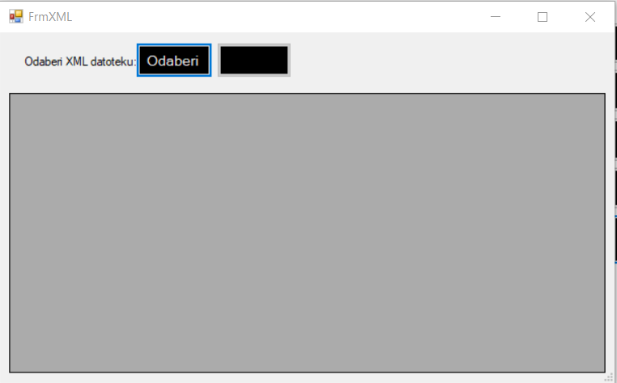
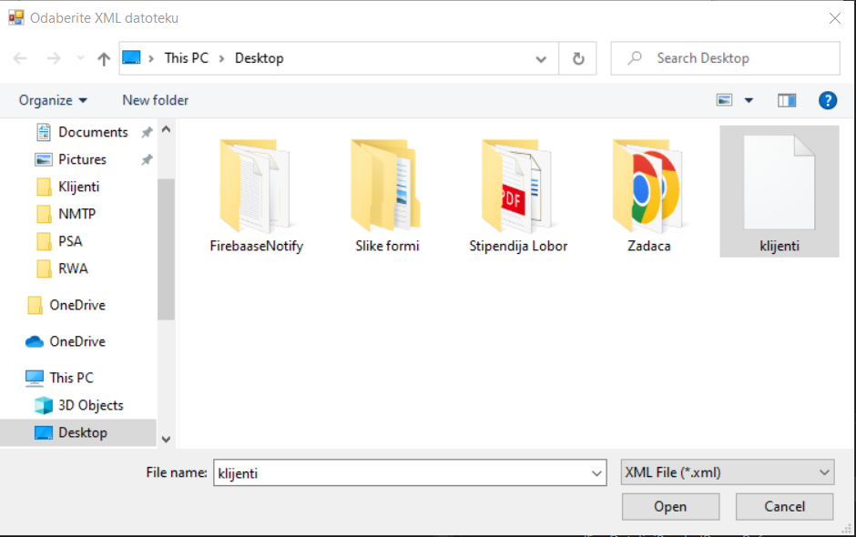
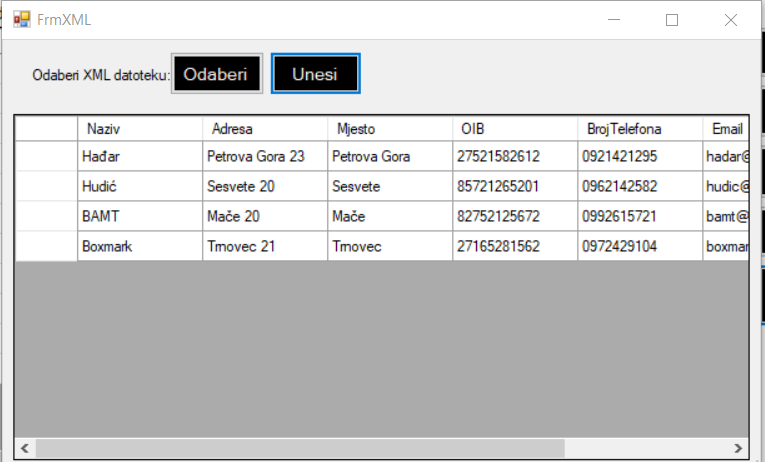

Ova forma se otvara kada radnik na formi za popis svih klijenata klikne na gumb 'Uvezi klijenta (XML)'. Forma se sastoji od datagridview-a i dva gumba 'Odaberi' i 'Unesi'. Kada radnik želi dodati klijente iz XML datoteke potrebno je kliknuti na gumb 'Odaberi' na temelju čega mu se otvara dijaloški okvir u kojem može odabrati XML datoteku.


Kada radnik odabere odgovarajuću datoteku kako bi klijente unio u bazu potrebno je kliknuti na gumb 'Unesi'. Ukoliko je sve uspješno dodani klijenti se prikazuju unutar datagridview-a. Kod unosa klijenata iz XML datoteke također su stavljene validacije tako da radnik ne može unijeti nesmislene podatke.
